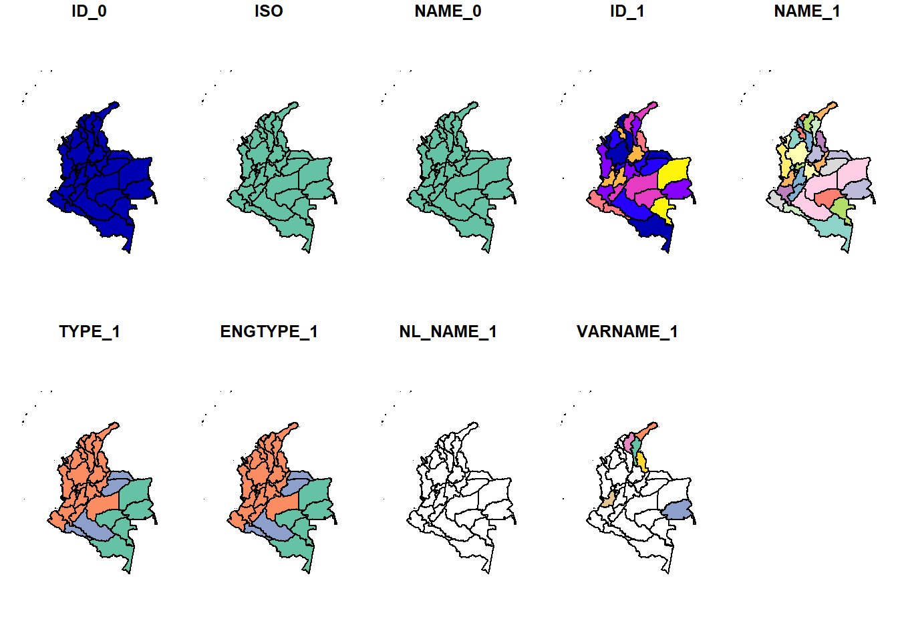
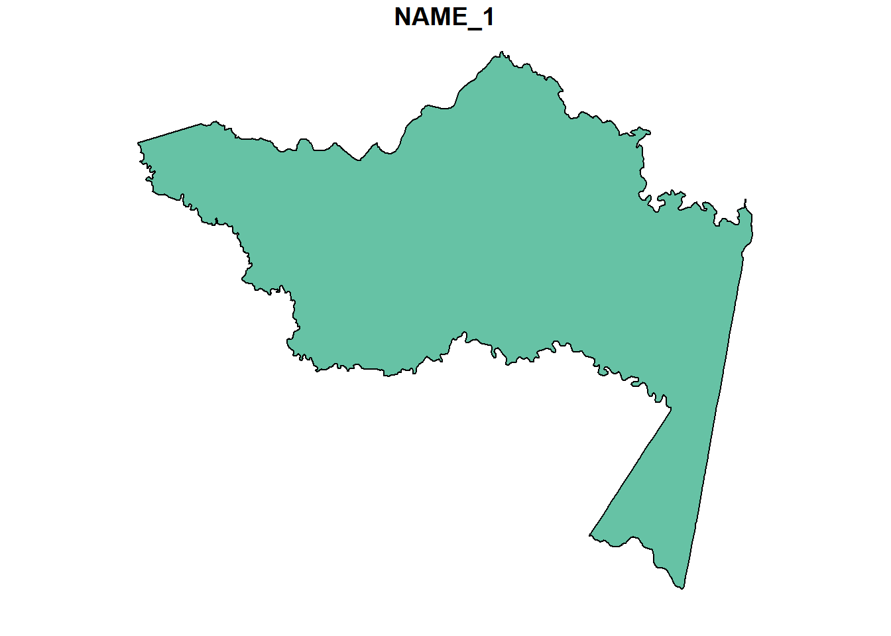
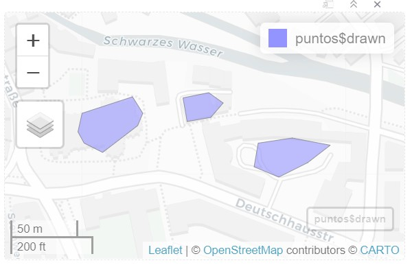

library(sf) # para abrir archivos shplibrary(sp) # library(rgdal)# leyendo shapefile de Colombia1col_admin<-read_sf("COL_adm/COL_adm1.shp")2plot(col_admin)
1
código de library sf, te visualiza el shp como base de datos
2
Se generan varios mapas que corresponden al número de columnas de la base de datos.

plot(col_admin[1,5]) # especificando la fila y la columna

# codigo del paquete rgdal # col_admin2<- readOGR("COL_adm/COL_adm1.shp")
Dibujar geometrías vectoriales
Crear geometrías vectoriales
#install.packages("mapedit")#install.packages("mapview")library(mapview)library(mapedit)library(dplyr)# 1. Cargar una ventana con un mapa basemapview()
# para colocar puntos, poligonos o lineas1 puntos<-mapview() |>editMap()
1
Esto te abre un panel de herramientas para colocar puntos y polígonos dentro del mapa interactivo y se guarda como base de datos
# Guardando como archivo shapelibrary(sf)mapview(puntos$drawn) # se selecciona todo lo que se dibujo anteriormente
NULL
# write_sf(puntos$drawn, "COL_adm/puntos.shp") # solo se pueden guardar o solo puntos, poligonos, no se pueden mezclar.

Convertir csv a forma / manipulación vectorial
library(tidyverse)library(sf)library(mapview)# abriendo base de datos obs<-read.csv2("specie_rana.csv", header =TRUE)head(obs)
# convirtiendo a shpobs_shp<-st_as_sf(obs, coords =c("Longitude", "Latitude"), crs=4326)head(obs_shp)
Simple feature collection with 6 features and 6 fields
Geometry type: POINT
Dimension: XY
Bounding box: xmin: -75.8531 ymin: 4.6083 xmax: -75.4441 ymax: 5.2415
Geodetic CRS: WGS 84
Species Temp Prec Prec_qs Prec_qh elevacion
1 Leucostethus fraterdanieli 223 1756 678 299 999
2 Leucostethus fraterdanieli 217 1870 647 316 1162
3 Leucostethus fraterdanieli 177 2079 801 313 1918
4 Leucostethus fraterdanieli 217 1762 652 271 1155
5 Leucostethus fraterdanieli 159 2292 991 342 2213
6 Leucostethus fraterdanieli 233 1852 677 287 838
geometry
1 POINT (-75.8531 4.8668)
2 POINT (-75.8348 4.6978)
3 POINT (-75.5791 4.7352)
4 POINT (-75.832 4.6083)
5 POINT (-75.4441 5.1852)
6 POINT (-75.6869 5.2415)
mapview(obs_shp)
Luego esto se puede exportar como archivo shapefile como vimos anteriormente
Descargar formas de países en R
# Descargar paises desde Rlibrary(raster) # paquete con shp de paises, wordclim y modelos de elevación library(sf)library(dplyr)library(mapview)library(geodata) # version actual de library rasterlibrary(terra)#getData("ISO3")#Mexico_2<-gadm(country="MEX", level= 2, path ="Mexico" ) |> st_as_sf()#mapview(Mexico_2)
Cambiar el sistema de coordenadas de referencia de un shapefile 📍
# Cambiar sistemas de coordenas de una geometria vectoriallibrary(sf)library(raster)library(geodata)# obtener limite de un pais de interes que nos servir? como ejemplocolombia<-gadm(country="COL", level=0, path ="Colombia" ) |>st_as_sf()colombia
Simple feature collection with 1 feature and 2 fields
Geometry type: MULTIPOLYGON
Dimension: XY
Bounding box: xmin: -81.84153 ymin: -4.228429 xmax: -66.83774 ymax: 15.91248
Geodetic CRS: WGS 84
GID_0 COUNTRY geometry
1 COL Colombia MULTIPOLYGON (((-69.92329 -...
{kind=link}